家では広げにくい素材を90分かけて使い切る
絵の具を広げる、粘土で形をつくる、木を組み立てる。家ではあきらめがちな制作に、90分を使います。

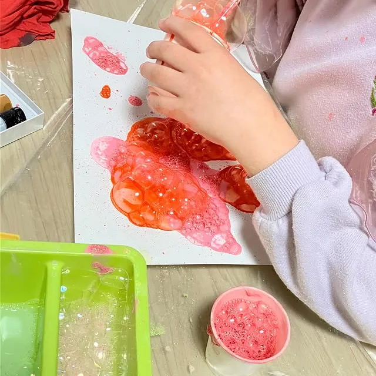

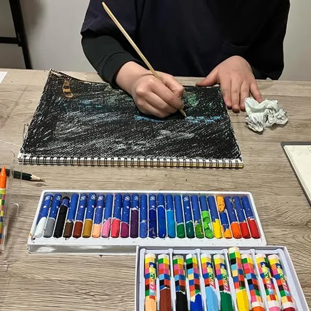
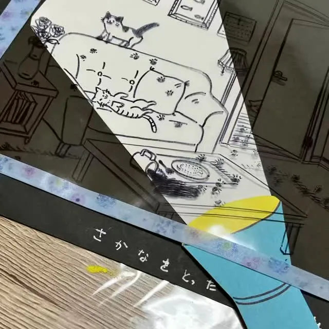
絵の具・パステルで描いて、粘土・紙・木工でつくる。
金曜16:00〜17:30の90分、いろいろな材料にさわれるクラスです。
まずは体験レッスンから
体験レッスンを申し込む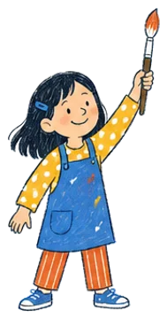
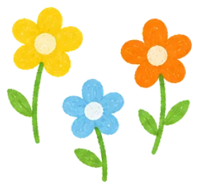
絵の具を広げる、粘土で形をつくる、木を組み立てる。家ではあきらめがちな制作に、90分を使います。
お絵かき教室のように描くことも、粘土・紙・木工で立体をつくることもできます。
使える材料を見る何をつくるかは、一人ずつやりたいことを聞いて決めます。決めた題材を、講師と相談しながら形にします。
どこまで身につくかは、お子さんによって違います。ここに書いたのは、教室で毎回することです。
描く6種類
 油絵
油絵 アクリル
アクリル 水彩
水彩 鉛筆
鉛筆 色鉛筆
色鉛筆 パステル
パステルつくる3種類
 粘土
粘土 紙
紙 木工
木工教室全体で扱う9種類です。【要確認：子どもクラスで油絵・アクリルを使うか】
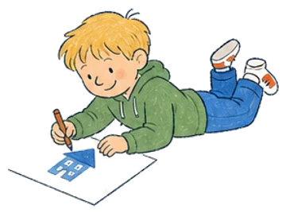
体験レッスンは 【要確認：料金・所要時間】 です。
申込み
フォームでクラスと連絡先を送ると、体験日の案内が届きます。
【要確認：連絡の方法と目安】当日
古道カフェ ヱンルゥトの教室へお越しください。
【要確認：体験の内容・持ち物】入会を決める
体験のあとで、入会するかを決めてください。
【要確認：入会手続きの方法】お友だちと一緒のときは、フォームの「ご質問など」に書いてください。
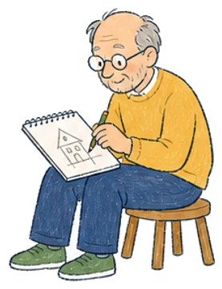
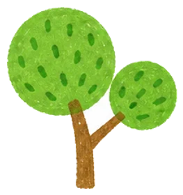
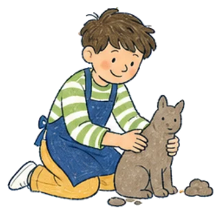
子どもクラスは、小学1〜6年生が対象の金曜夕方のクラスです。
| 対象 | 小学1〜6年生 |
|---|---|
| 曜日・時間 | 金曜 16:00〜17:30（90分） |
| 回数 | 【要確認：月3回か週1回か】 |
| 月謝 | 小学生6,000円／中高生7,500円【要確認：税込か税別か】 |
| 入会金・年会費 | 入会金5,000円年会費なし |
| 画材 | スターターセットあり。特殊な画材は別途材料費【要確認：金額】 |
| 定員 | 少人数制【要確認：定員】 |
| 体験レッスン | 【要確認：有無・料金・所要時間】 |
| 開催場所 | 古道カフェ ヱンルゥト（横浜市旭区中白根） |
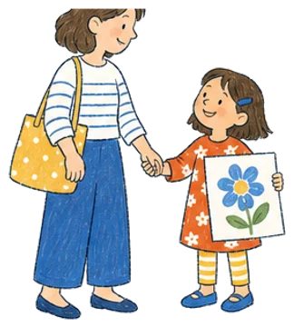
気になることは、ここにまとめています。
はい、自由課題なので、その子に合う素材から始められます。【要確認：教室で実際にしていること】気になることがあれば、申込みフォームの「ご質問など」に書いてください。
クラスは17:30までです。【要確認：片づけまで含めて17:30に終わるか】 お迎えの場所は 【要確認：場所】、お子さんだけで帰る場合は 【要確認：扱い】 です。
【要確認：カフェで待てるか・注文が要るか】 【要確認：下の子を連れて来てよいか】
【要確認：駐車場・駐輪場の有無、雨の日の行き方】 教室の住所は横浜市旭区中白根2-13-32 金子ハイツC-101です。
Googleマップで開く（新しいタブで開きます）子どもクラスは金曜日の夕方、90分だけです。ほかの曜日の習い事とは重なりません。家でする宿題は 【要確認：有無】 です。
小学1年生から6年生まで通えます。来ている学年は 【要確認：来ている学年の幅】 です。
絵の具や粘土を使うので、服や手が汚れることがあります。汚れてもよい服装でお越しください。エプロンは 【要確認：貸し出しか持参か】、持ち物は 【要確認：持ち物】 です。
入会金5,000円がかかり、年会費はありません。ほかに、スターターセット 【要確認：金額】 と、特殊な画材を使うときの材料費がかかる場合があります。
料金を表で見る【要確認：振替の有無と方法、休会・退会の手続き】
【要確認：持ち帰りの可否・時期】
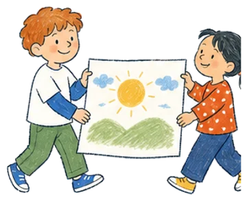
送信いただくと、【要確認：連絡の方法と目安】にご連絡します。